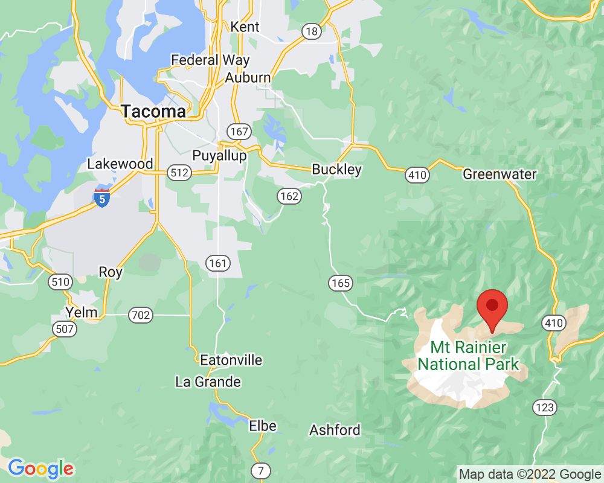

Emmons Glacier
Emmons Glacier melts and becomes White River.
You can also see a lake in this valley that is bright blue because of glacial flour.
Nearby, you can see plants growing on the edge of tundra.
Visited: August 27, 2021 at 5:46 PM
Location: Sunrise/Burroughs Mountain
